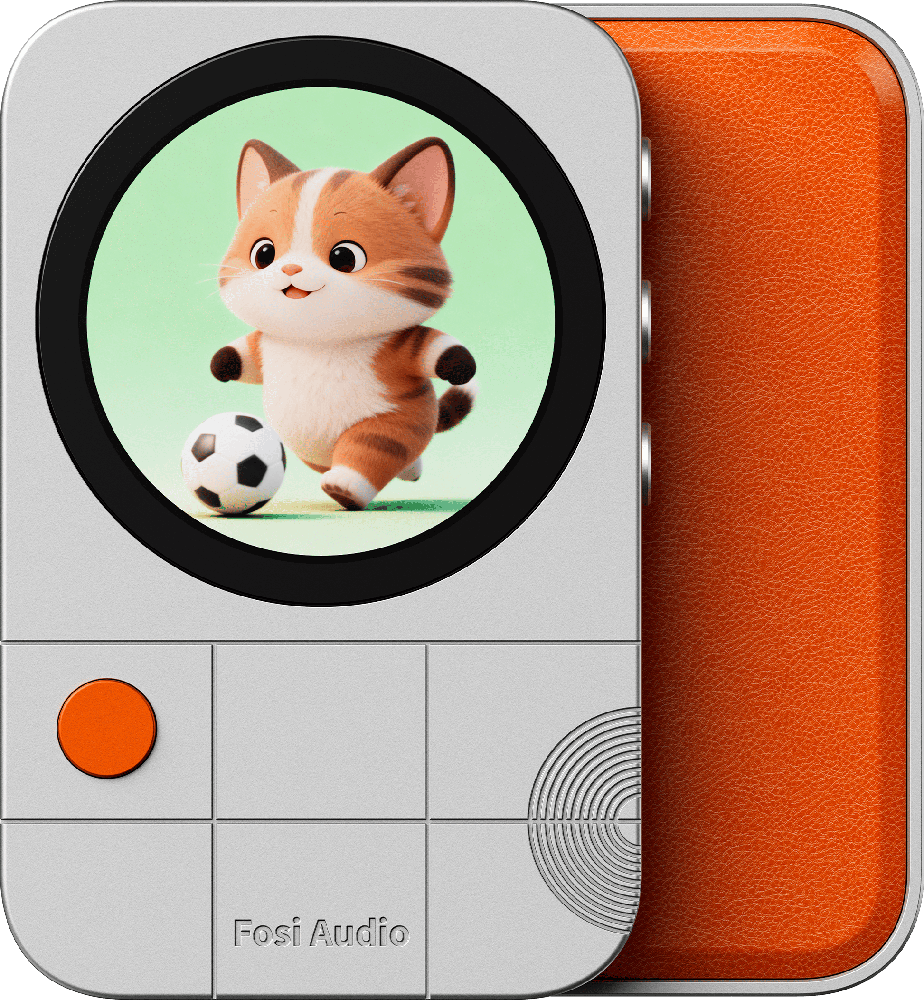

Twoja grafika
Dodaj zdjęcie, GIF lub film. Dopasuj kadr, obrót i podpis, patrząc na ekran MD3.
Zmień ekran swojego Fosi Audio MD3 w coś osobistego. Przygotuj zdjęcie, GIF lub fragment filmu i zobacz efekt na podglądzie urządzenia.
Bezpłatna aplikacja na iPhone’a i iPada. Także w wersji na Maca. Wszystkie materiały przetwarza lokalnie.
Jak zacząćNapisz do nas
Dodaj zdjęcie, GIF lub film. Dopasuj kadr, obrót i podpis, patrząc na ekran MD3.
Wybierz kolekcję albo sześć własnych grafik. Podmień obrazy fabrycznej kostki z kopią poprzedniego zestawu.
Srebrne urządzenie i jasny motyw albo czarne urządzenie i ciemny motyw. Przełączysz je jednym kliknięciem.
Wersja iOS jest przygotowywana do publikacji w App Store. Informacje o dostępności: lpociask@me.com.